-
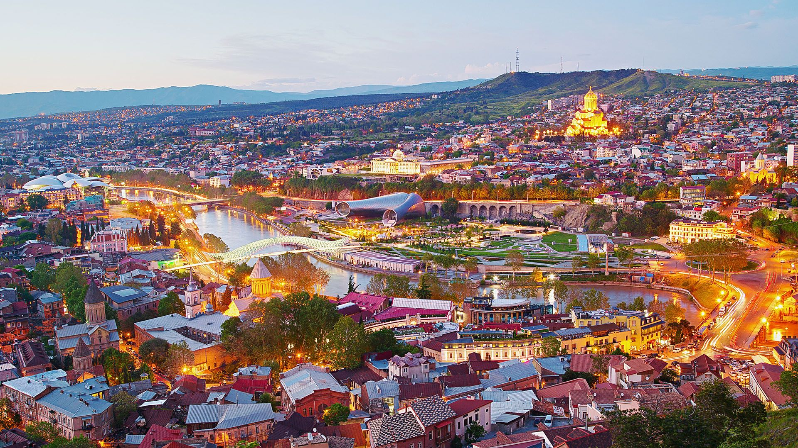
Tbilisi
The capital and the largest city of Georgia, lying on the banks of the Kura River with a population of approximately 1.5 million people. Its notable tourist destinations include cathedrals Sameba and Sioni, Freedom Square, Rustaveli Avenue and Agmashenebeli Avenue, medieval Narikala Fortress, the pseudo-Moorish Opera Theater, and the Georgian National Museum.
-
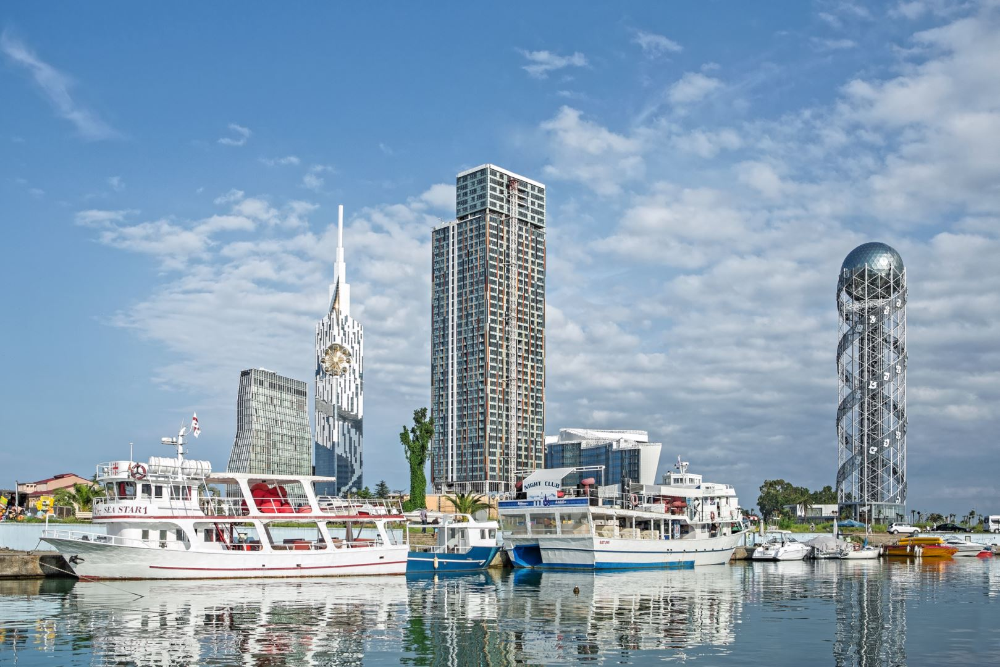
Batumi
The second largest city of Georgia and the capital of the Autonomous Republic of Adjara, located on the coast of the Black Sea in Georgia's southwest.
-
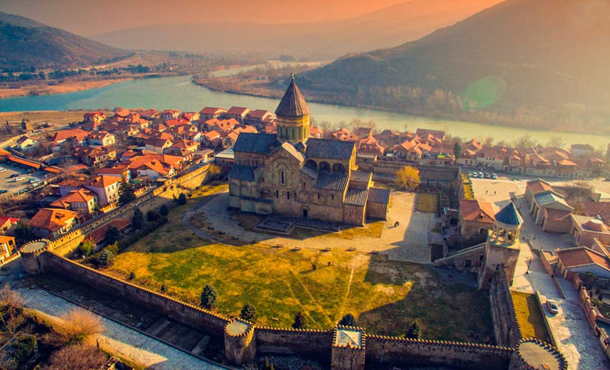
Mtskheta
Mtskheta was the capital of the early Georgian Kingdom of Iberia from the 3rd century BC to the 5th century AD. Svetitskhoveli Cathedral, Samtavro Monastery and Jvari Monastery in Mtskheta are amongst the most significant monuments of Georgian Christian architecture.
-
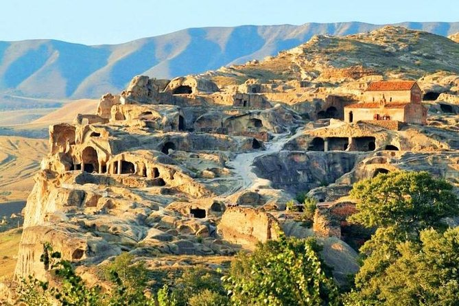
Upliscikhe
Uplistsikhe - "the lord's fortress" is an ancient rock-hewn town in eastern Georgia, some 10 kilometers east of the town of Gori, Shida Kartli. Built on a high rocky left bank of the Mtkvari River and is notable for the unique combination of rock-cut cultures from Anatolia and Iran.
-
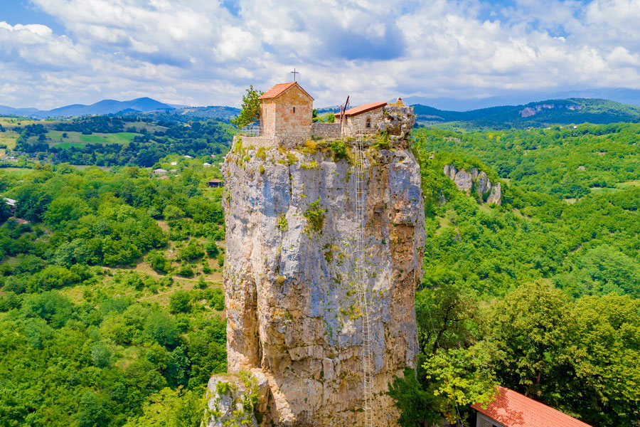
Katskhi pillar
The Katskhi pillar is a natural limestone monolith located at the village of Katskhi in western Georgian region of Imereti, near the town of Chiatura. It is approximately 40 metres (130 ft) high, and overlooks the small river valley of Katskhura, a right affluent of the Q'virila.
-

Vardzia
Vardzia is a cave monastery site in southern Georgia, excavated from the slopes of the Erusheti Mountain on the left bank of the Kura River, 30 kilometres from Aspindza. The main period of construction was the second half of the 12th century. The Church of the Dormition, dating to the 1180s during the golden age of Tamar and Rustaveli, has an important series of wall paintings.
-
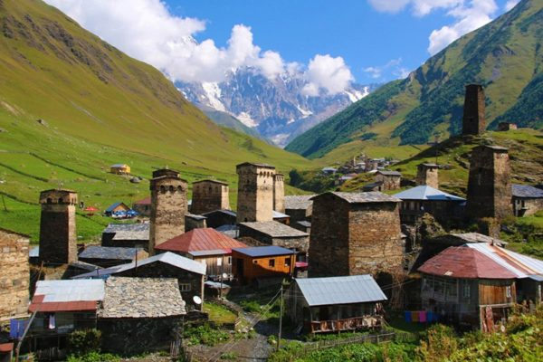
Ushguli
Ushguli is a community of four villages located at the head of the Enguri gorge in Svaneti, Georgia. It is not in an accessible location, which has preserved many of the villages' medieval characteristics, including unique defensive tower houses called Svan towers.
-
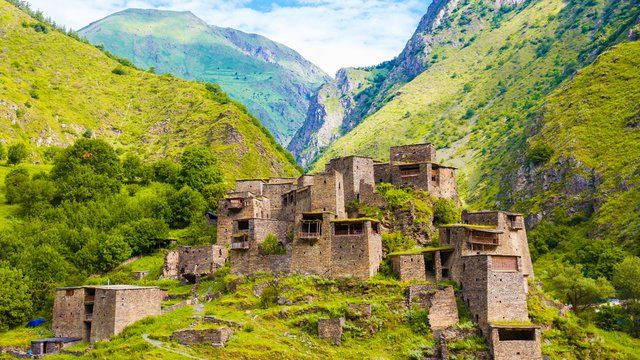
Shatili
Shatili is a historic highland village in Georgia, near the border with Chechnya. It is located on the northern slope of the Greater Caucasus mountains, in the historical Georgian province of Upper Khevsureti. As of 2014 census, population of the village was 22.
-
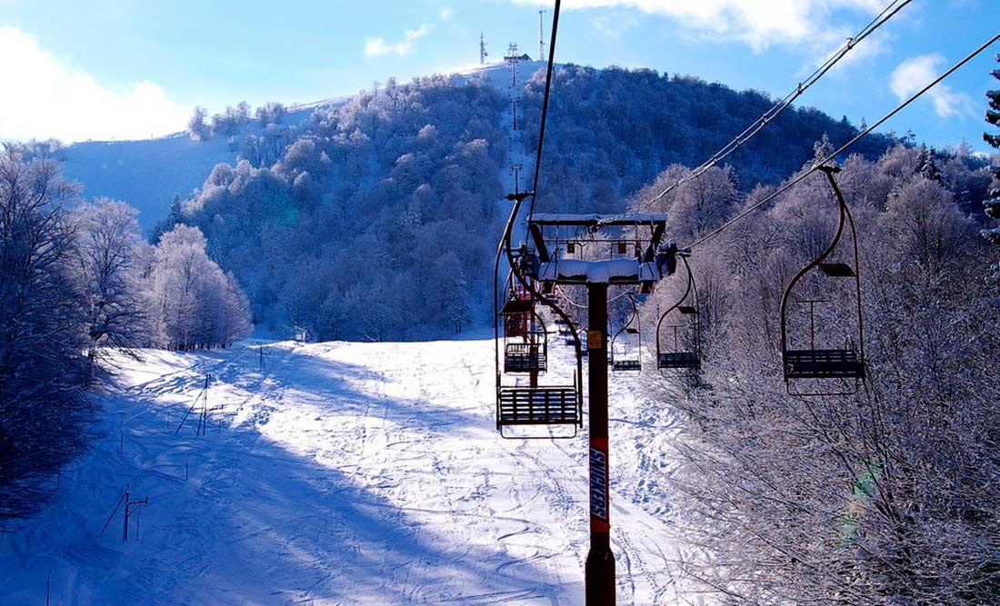
Bakuriani
Bakuriani is a daba and a ski resort in the Borjomi district of Georgia. It is located on the northern slope of the Trialeti Range, at an elevation of 1,700 meters (5,576 feet) above sea level.
-

Gudauri
Gudauri is a ski resort located on the south-facing plateau of The Greater Caucasus Mountain Range in Georgia. The resort is situated in the Stepantsminda District, along the Georgian Military Highway near the Jvari Pass, at an elevation of 2,200 meters (7,200 ft.) above sea level.
-

Kazbegi
Stepantsminda is the center of the Kazbegi Municipality. It is a townlet in the Mtskheta-Mtianeti region of north-eastern Georgia. Stepantsminda is known for its scenic location in the Greater Caucasus mountains, and is a center for trekkers and mountain climbing. Local attractions include the Kazbegi Museum, Ethnographic Museum, the Gergeti Trinity Church, and Mount Kazbegi itself.
-
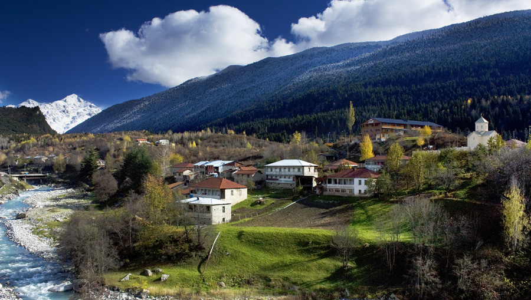
Mestia
Mestia is a highland townlet (daba) in northwest Georgia, at an elevation of 1,500 metres (4,921 feet) in the Caucasus Mountains. Mestia is located in the Svaneti region of Samegrelo-Zemo Svaneti province. The townlet is dominated by stone defensive towers ("Svan towers").
-
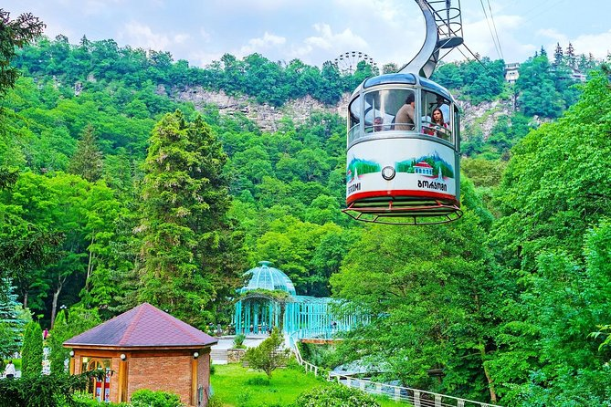
Borjomi
Borjomi is a resort town in south-central Georgia It is one of the municipalities of the Samtskhe–Javakheti region and is situated in the Borjomi-Kharagauli National Park. The town is noted for its mineral water industry (which is the number one export of Georgia).
-
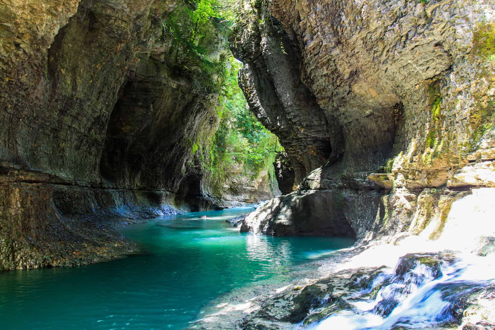
Martvili Canyon
Gachedili Canyon Natural Monument also known as Abasha Canyon Natural Monument and Martvili Canyon is an Abasha river erosion. canyon is 240 meters above sea level. The water in the Abasha river has deep green color in the canyon.
-
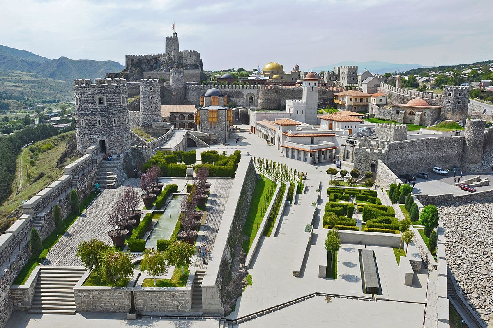
Rabati Castle
Akhaltsikhe (Rabati) Castle is a medieval fortress built in the 9th century under the name "Lomsia Castle" in the city of Akhaltsikhe in southern Georgia, recently globally reconstructed.
-

Signaghi
Signaghi is a town in Georgia's easternmost region of Kakheti. Signagi serves as a popular tourist destination due to its location at the heart of Georgia's wine-growing regions, as well as its picturesque landscapes, pastel houses and narrow, cobblestone streets. The venerated Bodbe Monastery is located 2 kilometers from Signagi and is a place of pilgrimage due to its association with St. Nino.